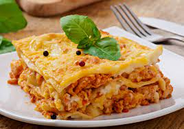

Lasanha

Description
This lasagna will make you excited for the day!
Ingredients
- 500g de massa de lasanha
- 2 cx de creme de leite
- 3 colheres de farinha de trigo
- Canseiiiii (muito ingrediente)
Steps
- Cozinhe a massa segundo as orientações do fabricante,
despeje em um refratário com água gelada para não grudar e reserve.
- Refogue o alho, a cebola, a carne moída, o molho de tomate,
deixe cozinhar por 3 minutos e reserve.
- Derreta a margarina, coloque as 3 colheres de farinha de trigo e mexa.
- Despeje o leite aos poucos e continue mexendo.
- Por último, coloque o creme de leite, mexa por 1 minuto e desligue o fogo.
- Despeje uma parte do molho à bolonhesa em um refratário, a metade da massa, a metade do presunto, a metade da mussarela,
todo o molho branco e o restante da massa.
- Repita as camadas até a borda do recipiente.
- Finalize com o queijo ralado e leve ao forno alto (220° C),
preaquecido, por cerca de 20 minutos.